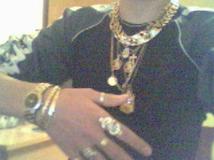
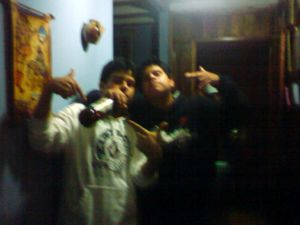
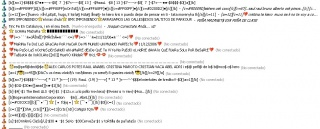
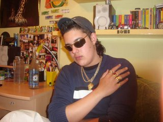
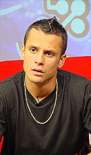
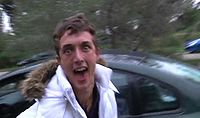

Canilandia
 De: La Frikipedia, la enciclopedia extremadamente seria.
De: La Frikipedia, la enciclopedia extremadamente seria.
Canilandia o sinplemente "Tiega ShuRMAno" es un horrible estado totalitario que se carecteriza por exister dentro de una democracia.[LOL?] El pais se caracteriza por su falta de higiene y extrema riqueza, que unicamente invierten en meterse por el culo llevarla colgada del cuello para ir de "chungos". Actualmente, esta nación a sido el punto de mira para una prueba de bombas nucleares segun la ONU.

Una de las actividades favoritas de los canis.
 M.A. se sentiría muy orgulloso.
 Es dificil diferenciar si estan borrachos o no.
Ubicación
Por más increíble que suene, nadie sabe con exactitud (ni siquiera los propios canis) donde podría ubicarse canilandia, sin embargo, se sospecha que podrían estar en determinadas ciudades de España, debido a su gran población.
Andalucía
Cortegana en la sierra, ciudades de El Puerto, La Línea, Los Barrios y Tarifa. Sin olvidar las famosas malvinas en Arcos de la Fra.
Addenda, Granada, concentrándose esta especie en los barrios de Almanjáyar, El Sáidin y la Chana; y cinturón (Armilla,Maracena,Albolote, Santa Fe, Peligros...). La localidad jiennense de Martos se está convirtiendo en santuario de esta especie desde épocas recientes, vamos, que da un miedo de la hostia. En Málaga capital pueden presumir (¿¿??) de poseer su propia y endémica especie de Canis, llamada Homo Canis Malacitanus o "Merdellón Común", diferenciándose de las demás variedades por su uso de los vocablos "Payaza" para dirigirse a la novia o pareja sentimental y "Shibato" (ellos lo escriben así con "b") para referírse a los policías. También defienden a brazo parido la libertad de Farruquito, habitan principalmente en las zonas de la Carretera de Cádiz, El Palo, El Cónsul y La Palma.
En Córdoba, se les sitúa, en los barrios de Las Moreras (100% cani) Las Margaritas,Miralbaida,y la Fuensanta entre otros. En el primer barrio mencionado, el ser cani es una plaga, naces siendolo, y no puedes remediarlo, en los otros barrios, la mayoría de la población juvenil cani, son descendientes de padres trabajadores de clase media-baja, que se dedican a hacer el subnormal con su comportamiento típico. Otro barrio infectado de canis es las Palmeras, otro sitio donde hasta los mas ancianos son canis y no hay cura posible para ello.
Mención a parte para un alegre pueblecito cordobés llamado Puente Genil, en el que, tal vez, puedas encontrar el mayor numero de canis, pastilleros en lenguaje local, por metro cuadrado de España. No es raro encontrar en este pueblo, parques repletos de canis, justamente después de la hora de almorzar, con sus litronas y su música "fea", comentando las jugadas rebeldes de la noche anterior, tales como: "killoh, no saes lah ostiajh que leh metih aller al casho capuyoh del monti, saes?" o "tioh, me metih aller una rasha quej te cagas". Además, siempre podrás notar como la gente no cani de dicho pueblo temen a estos canis, miedo proporcional al odio que sienten por ellos, pero, claro, no tiene sentido pelearse con un cani, a no ser que quieras pelearte con 50 más. Memorable fue el día en el que cierta selección andaluza juvenil de cierto deporte, alojada en la localidad, tuvo que huir de la zona de movida hasta su refugio, después de sufrir una persecución que ni los nazis.
En Granada existen diversos lugares donde existe mucha influencia de los canis. Así, en el Imperio Motrileño del Sur, el 95% de la población está formada por canís. Existe una república limítrofe a Almería, que en su día fueron fundados por canís, de ahi su nombre, Caniles, aunque sólo representan el 25% de la población.
- En Almería también prolifera esta degeneración del homo sapiens. Cabe destacar lo especialmente agresivos que son en esta provincia. Allí son llamados calorros o socios y se destacan los barrios de Las 500 Viviendas, los Pisos Rojos, Piedras Redondas, Barrio de Torrecardenas, Barrio de Los Ángeles, El Puche, Pescadería, el Zapillo,Nueva Andalucía etc... Verdaderamente son una completa plaga a las que media Almería les odia y la otra media forma parte de ellos. Muy triste la verdad.
Extremadura
En Badajoz capital abundan los barrios canis, también conocidos como "zonas de guerra", lugar donde son un grave problema. Algunos de estos son: Las cuestas, Los Colorines, Cerro de Reyes... Comúnmente son llamados "makois", por su aspecto de malotes, mientras que al las de género femenino se las denomina "galufas". En la ciudad de Badajoz teniendo igualmente los mismos patrones de comportamiento tienen una inevitable variación lingüística típica de la zona, habiéndose adueñado del término "acho" característico de la ciudad para su propio uso personal. Se cree que varias personas en la citada ciudad de Badajoz están gestando en estos momentos la preparación de "las guerras coys" cuyo objetivo es librar a la ciudad de esa apestosa lacra que no ceja en su empeño de extenderse.
En otras ciudades de la provincia de Badajoz como Mérida también existe una gran cantidad de "territorios enemigos", los cuales son: el Peri, Juan Cané, La Pá, Kinkilandia, San Juan... Cabe comentar que en algunos de estos barrios viven gran cantidad de familias trabajadoras, no obstante, sus hijos son unos salvajes pertenecientes a la tribu de los canis. En Villanueva de la Serena se dan extraños casos de simbiosis entre canis, bakalas, mercheros y gitanos y es dificil de verdad llegar a diferenciarlos fehacientemente.
En Cáceres capital los canis viven en guetos paradisíacos como Aldea Moret, donde viven a sus anchas, ya que por allí no pasa la poli ni de coña y pueden hacer lo que les de la gana. Es difícil llegar a visualizarlos si no es dentro del barrio, pero en ocasiones especiales (fines de semana, fiestas y botellones, más que nada), nutridos grupos de canis pueden verse pululando por diversas calles, con el peligro que ello conlleva.
Murcia
- En Murcia los canis son conocidos como garrulos o bakalas (dada la conocida afición de éstos por esta especie de ruido que obtienen haciendo chirriar un gato de estos de levantar el coche cuando se te pincha la rueda y mezclándolo con mensajes subliminales, como "pasti, pasti, pasti...", que dan lugar a sus hábitos alimentarios). Los hay por todos lados, aunque tienen mayor representación en pueblos perdidos de la mano de Dios. Caso especial es el de Murcia capital, donde se encuentran principalmente localizados en el Polígono de la Fama y el Infante y basan su alimentación en una dieta de porros, pastillas y cualquier otro tipo de droga estupefaciente. Allí sus enemigos son cualquiera que no sea como ellos, ya sea pijo, jebi, punkarra, jinjol (hip-hop) o lo que sea, no se llevan bien con nadie y no los aguanta ni su familia. Entre sus principales actividades podemos destacar el tirarse a la novia en el "tunin" con los "asintos recostaos", además de las propias de los canis en general.Tambien dedican parte de su tiempo a "pegar el palo" en manadas de 3 personas en adelante.Dar frecuentes patadas al diccionario, escuchar Reggetonto, y pegar chillidos en puertas de edificios ajenos.
Estudios recientes afirman que el 60% de la poblacion murciana en edad escolar(o edad de dar porculo en la puerta del colegio)son garrulos, Sus caracteristicas son:
- Unos mal hablados
- Chulos (pero muuy chulos)
- Comienzan a consumir drogas a los 10 años (la media)
- Casi todos llevan el mismo peinado (99,9%)
- ¿He dicho ya que son unos mal educados?
Comunidad Valenciana
- En Chanclis. Los chanclis se suelen encontrar en diversos lugares de la provincia. Suelen campar a lo largo y ancho de sus zonas de marcha, pero tienen como epicentro barrios pintorescos, como pueden ser las Mil Viviendas y San Blas de Alicante, Los Palmerales de Calvari City en Santa Pola . Los chanclis suelen funcionar como las castas indias. Esta el chancli-gitano, que proviene de barrios como los anteriormente citados, y que se dedica a pasearse por todos los parques de las ciudades, reclutando chanclis cuya maxima aspiracion es la de convertirse en gitano.
Antiguamente los chanclis de estas tierras pasaban los fines de semana acudiendo a La Céntral o La Mánsion, todos en su R-19 pintado de plata y escuchando chunta-chunta . Ahora lo que se lleva es quedarse toda la noche en el parque de tu barrio con el patriarca (chancli-gitano) iniciando el aprendizaje de transformacion. Vease, pasar la noche en vela dando palmas y ahullando como un gato.
- En chungos, malotes, mascachapas,paterneros, aunque a efectos prácticos son lo mismo, se distinguen facilmente por decir la muletilla "nano" 3 de cada 10 palabras. Puedes verles por el Califato Independiente de Benimaclet(el carles,el parke de la via,la avenida valladolid,sarriers,etc),Alboraia(inciso mas adelante), aunque la mayoria se encuentran en Paterna/Godella/Montcada/La Pobla de Farnals, pueblos cani por excelencia.
- En Alboraya, pueblo que se cree independiente de valencia(separado por una rotonda de valencia ciudad) esta surgiendo una nueva raza de "progres?" malotes que se extiende rapidamente desde su epicentro situado en el barrio de los cristales, "El tocat". Se caracterizan por creer que tienen una base de cultura (adquirida de rumores del tipo: man dixo q..., y mayormente de la caja tonta)con la cual "piensan?" (si es que se le puede llamar asi al choque influctuoso de dos neuronas) que son superiores a los malotes que les preceden.
Esta nueva raza de canis tienen como mayor aspiracion convertirse en el nuevo Tony montana de alboraya, asi empìezan a ganarse leuros para comprarse su coche o moto y estamparse a los dos dias. Para concluir si te cruzas con alguno de estos personajes no te dejes engañar por su apariencia progre porque son igual de garrulos y fachas que sus predecesores.
Cataluña
 En
Catalunya se les llama killos, y en esta captura de
messenller se puede ver que por desgracia, Abundan.
- En Cataluña y Concretamente en Sabadell ( capital cani por excelencia de catalunya ) , también existe esta subespecie de ser humano, allí són llamados killos, primos, Pelaos o Jinchols (fusión entre gitano y cani) o lo más normal, que no se les llame por ningún modo. Fuera de la área urbana de Barcelona son prácticamente inexistentes.
- Los cholos poseen una enorme impermeabilidad cultural que les permite nacer, (mal)vivir y morir en Cataluña sin aprender una sóla palabra en catalán a excepción del vocablo "neng", utilizado principalmente en frases como: "psch! psch!, neng! tienes un euro, neng?!"; "qué dice, neng?!".
- Aunque desearían ser gitanos y se llevan bien con el "moha", que es el moro que les vende el "jachís", suelen jactarse de ser muy racistas.
- En Barcelona capital, el cani es conocido como killo, cholo (conocidos así por el pelo rapado, excepto la parte de la nuca que se la dejan crecer) o julai. Las Jessys o Yenis son conocidas como killas o cholas. Los canis abundan sobre todo en los barrios como la Mina, popular barrio de gitanos, el Raval o también en la Zona Franca, barrio situado en la periferia de Barcelona (sobre todo abundan en la zona "de las casas baratas"), al igual que la Mina (situado ya entre Barcelona y Sant Adrià del Besòs). A los killos se les puede encontrar en las plazuelas y por la calle todo el día sin hacer nada. Suelen ir todos en moto, excepcionalmente en coche y presumir de oros (lo más abundante son los cordones extra-gordos y los aros con una cruz colgando de ellos). Grafitean las paredes, los bancos, los árboles y comen muchas pipas y, por supuesto, tiran todas las cáscaras en el suelo. En el metro, se pasean con los altavoces del teléfono móvil puestos para llamar la atención y que la gente se fije en ellos (lo más habitual es que no paguen ni el billete de metro). La música que escuchan habitualmente es el flamenco, artistas como la Húngara, Camarón, entre otros. Y, por lo que se refiere a la vestimenta, suelen llevar el típico chándal y las muelles Nike o las TN. Acerca de las discotecas, la mayoría de ellos suelen ir a Cuartier. También podemos encontrar muchos canis en Santa Coloma de Gramenet y, si alguien está interesado en encontrarse una gran manada de canis, que asista al festival de Can Zam que organiza Radio Teletaxi en Santa Coloma cada año, en el mismo parque de Can Zam.
- En San Roque, barrio situado al lado de Sant Adrià del Besòs, también encontramos canis que conviven con los gitanos, puesto que quieren asemejarse a ellos.
- En Cornellà, en algunos barrios, hay una subespecie de cani, bueno más bien una supraespecie. Es para que nos entendamos de la siguiente forma, cogemos un marroquí de entre 13 y 18 años y lo fusionamos con un cani. El resultado es un ser de lo más estrambótico. Hay un segundo paso evolutivo que sería mezclar ese súper-ente con un Latin Kings. Nota: Alguno de estos sujetos pueden ser altamente peligrosos ya que se concentran en un solo cuerpo todo lo malo de los grupos antes mencionados. Se rumorea que es un experimento del gobierno para crear una nueva raza “humana” con una inteligencia inversamente proporcional a su vandalismo y violecia.
- En el Prat de Llobregat, suelen abundar en el Barrio de San Cosme, donde también residen muchos gitanos.
- En Roquetas abundan cerca del torrente donde van a "pillar".
Baleares
- En chupabolsas, pelocenicero o cachopan, en lugar de asaltar pijos o independentistas (que también vamos buenos), se divierten amargando la existencia de los Audi (3's o 4's nunca superior), aunque los gitanos que mas trafican llevan 6's e incluso 8's de los primeros llenos de golpes)al cual lo calorrizan con bajos de fibra que rajan a los tres dias de haberlo sacado del taller y atrapasueños (este icono es obligatorio) colgando del retovisor (+25 en estilo).
Madrid
- En puta plaga). Desde hace años se ha puesto de moda entre ellos la famosa "CHEVI" una chaqueta de cuero que cuesta medio riñon y que por su precio no se quitan ni para cagar, es facil ir a discotecas y verlos sudar como gorrinos algunos sin camiseta pero eso si, la chevi puesta. esta moda tambien a llegado a las tias con sudaderas de la misma marca pero les han devuelto la jugada, las tias han puesto de moda el tipico abrigo con la capucha de pelos y a ellos les ha gustado tambien. Abunda el consumo masivo de cocaína aparte del de hachís,la nueva moda del mda o cristal que sustitulle las pastillas en las discotecas, y la costumbre de mirar con la boca medio abierta y vacilar diciendo: "¿Qué pasa, primo?". Se cree que su máxima aspiración es llegar a convertirse en Mundokillocañí al estilo de MySpace para el adolescente medio americano.
- En Leganés, los canis son conocidos como Peinetas, debido a su peculiar forma de ponerse la gorra, como si de la pantoja se tratase. Además tienen un barrio especial solo para ellos.
País Vasco
- En el País Vasco también abunda esta fauna subdesarrollada, que posee unas características similares o identicas. Su habitat natural y en el cual se puede distinguir un gran numero de canis es Barakaldo y a partir de las 9-10 de la noche es el centro de reunion de toda la periferia de pueblos, barrios y edificios, por lo cual si eres de alguna raza odiada de los canis es altamente importante que no pises esta ciudad a partir de esas horas. Aquí son conocidos por chunteros o bakalas y tristemente son una raza predominante asta los 15 años cuando empiezan a pensar, aunque muchos siguen por la senda de la degeneración. Los que continuan se convierten en bastardos agresivos que viven para buscar la boca a la gente con el único objetivo de pegarse y con una triste noción de superioridad. Su apariencia se caracteriza por ropa de plastico o apretada, camisetas XXS, zapatillas con muelles, pelo rapado por los costados con la parte superior engominada, y rayas rapadas en las cejas.Tienden a ir en sus coches tuning con musica extremadamente alta con el fin de perturbar al transeúnte y a los residentes de las ciudades más cercanas.El idioma es relativo a la zona habitada. En su vocabulario pueden aparecer palabras y expresiones estúpidas como: "Oye Tato!!", "Eres un momias", "Te vas a comer las del pulpo", "¿¡Qué pasa manin!?, etc. Toda frase estúpida inventada por alguien estúpido en un momento estúpido es uan referencia válida para esta sub-especie de simio.
Cantabria
- En Santander y "periferia" se denominan Kies. Tienen características especiales, como el llevar deportivas Ni-que??? (Llamadas playeras en la zona, no pregunteis por qué ¬¬).... Tambien suelen llevar por la calle, anoraks para esquiar de la marca Spider, lo que ellos denominan como "chupa motera" o "cazadora motera". Suelen utilizar palabras y expresiones de la jerga regional y en vez de escuchar Bakalao, escuchan música del estilo de sevillanas del año de matusalen y sobre todo mucho, pero que muxo Reggetooon!!! ton ton toooon!!!. Los Kies deben de ser Nazis, fascistas, saberse de memoria el cara al sol, pero no saber contestar a preguntas tan elementales como cuando ganó Franco la guerra. Las novias de los kies se llaman Jennys, y tiene características similares a los Kies. Para más información: manual del Kie.Además es importante hacer notar que en Santander, el "Kie" tiene un sentido mas idealizado que en el resto de lares de Espiña, contando para ello con un lenguaje mas sutil y una serie de movimientos extrafalarios para marcar su condición. En Santander utilizan palabras como "no me rayes", "soy cantabru","quieres jari? porque igual te pongo de fango hasta el cuello, que llamo a mi primo ein!". Por otra parte, el movimiento que los caracteriza es mover los brazos oscilando cúal péndulos, y hacer que padecen tics nerviosos en la cabeza, que giran continuamente en todas direcciones. El esputo tras gargajo sin igual es de necesario cumplimiento antes de empezar a hablar.
Islas Canarias
- En las Islas Canarias esta escoria es conocida por otros sobrenombres, y parece ser que son otra cultura nacida al margen y anteriormente a los canis, pues a pesar de que comparten muchos aspectos (son igual de gilipollas) en otros se diferencian:
- En Gran Canaria se les conoce por Koyos/as y se centran en dos cepas bien diferenciadas: las cepas impares son las pertenecientes a la capital, Las Palmas de GC, y más concretamente en... cualquiera de sus barrios. La Feria, Escaleritas o La Isleta son prototípicos en ese sentido, sin embargo nada como Guanarteme para ver una variada selección de Koyos/as de todas las edades. En Lanzarote estos focos de casi-gente son: Valterra, Arrecife(los pisos amarillos, el simón bolivar,las 100 viviendas..), Argana (Arganistán) y Los Geranios. Suelen ser los tipicos que no "salen con sus colegas" sino que "paran" con ellos/as en la esquina o el parque más cercano.Esto es debido a que, al contrario que en las grandes ciudades de la peninsula, en las Canarias no hace falta planear una salida a ningún lado porque simplemente si te aburres en tu casa te sales a la calle a "ver con quién te encuentras" en tu lugar habitual para "parar" con tu gente. Suelen hablar con acento "serrao-canarión-perdío" que sólo entendemos los demas canariones, obviamente. Suelen ser pacificos...a menos que "mires mal" a ellos mismos o bien a alguno de sus protegidos(colegas a los que debe un favor o que le caen bien). En caso de que les molestes...los llevas claro macho!Te pueden "traer"(llamar para que te peguen) a alguno de sus "colegasos influyentes" que bien pueden darte por saco un rato, ya que suelen ser los habituales de los centros de menores tipo "La Montañeta". Eso sí, como te pillen te matan. Es normal encontrar, por causa y efecto de los susodichos Koyos, policias en las puertas de los intitutos de LP (las Palmas de G.C.)a la hora de la salida.Su música emblemática hasta el curso pasado(estamos a 21.10.07)era el reggetón de los huevos, que ha sido PARCIALMENTE (repito, parcialmente)sustituido por el bakalao, a pesar de que se siga oyendo bastante reggetón.Si bien politica y oficialmente Gran Canaria es de España, aunque los colombianos suelen ser denominados "parces" por esa extraña mania de llamar a sus colegas "Parce" o "Parcerita" en vez de por su nombre. Divertise para los Koyos/as canarios no es divertirse, es "armarla" y los porros los ves en cada esquina "rulando" en los grupos hasta que se fuman hasta el filtro.
- En Tenerife, son llamados kinki(s) o Changa(s) (Cosa Hermafrodita Andante No Grandemente Apreciada) Su centro de actividad desorganizada se encuentra en los barrios de la zona metropolitana Santa Cruz-Laguna. Estos elementos abundan en barrios como Ofra, Santa Clara, La cuesta piedra San benito y añaza principalmente. A mencionar que abundan por desgracia asimismo en los alrededores de los institutos públicos si aun no han terminado la secundaria. Luego todos los barrios de la isla son sometidos a este fenómeno pero en menor medida que los mencionados. También han intentado a duras penas apoderarse del sur de Tenerife, pero la mafia de John Palmer puede más que ellos. Sus gustos musicales son la misma porquería, y ellos tienen la suerte (desgracia para nosotros)de que los singles (por llamarlos algo) de estos "Artistas" americanos llegan al archipiélago antes que al resto de España. Y para no ser menos, de esta isla salen artistas de la talla de las hermanas K-narias que destacan por romper los tópicos del reggaeton, es decir, si el reggaeton es machista, ellas son feministas. Y son como una especies de jessis clonadas y surgidas en añaza y que saltaron a la fama en una concentración changa (concentracion regge-tunning, que era una combinacion entre reggaeton y tunning). Por desgracia ya se les oye mas que las murgas del carnaval. Y como Este subgrupo humano se centra en las plazas de los barrios poblándolas de pintadas absurdas y haciendo ruido con las motos hasta que consiguen que los vecinos les lancen lo primero que tengan a mano, pues no se cortan aunque sean las 4 de la madrugada. Tenerife es una de las islas afortunadas, las insituciones públicas, en especial el ayuntamiento de Santa Cruz de Tenerife y el de Arona (al sur), han decidido crear una unidad especial de la policia local para combatir esta especie, llamada UNIPOL. Esta unidad la forman los mejores policias locales de la isla y siembran el terror y el respeto de los kinkis o changas a donde quiera que van con sus furgones blindados y sus perros. Aunque esta unidad también haya tenido un alto índice de denuncias por exceso de poder contra gente normal, a mencionar que resultan necesarios para combatir a tal plaga que puebla la isla. Los Changas se pueden diferenciar a donde quiera que van y funcionan en manada, y si hay algún problema en otro barrio, ello van con sus amigos a luchar contra el otro barrio (es como una especie de GTA san andreas pero con mas drogas, en la que te tienes que vender mas que camellos rivales)se ha de añadir que en la mayoria de los casos, despues de reunidos ambos grupos dispuesto a pelear acaben simplemente lanzando un par de insultos y luego se "jiñan" (por usar su vocabulario) y ahí termina todo. Sus medios de transportes son las guaguas, en las que se dejan marcadas pintadas o rayones con sus motes o msn para que le agregen mas miembros del clan; motos, peugeot 206, BMW 325 o golf GTI, principalmente. No resultan peligrosos a menos que tu te encuentres soilo y ellos estén en manada, igualmente son fáciles de espantar.
Su pose preferida es, cuando se trata de una foto con varios colegas, señalando a los susodichos con el indice o bien con el pulgar en señal de aprobación. En el caso de las changas, sus poses favoritas para cualquier tipo de fotografia es toda aquella desde la que se obtenga una buena panorámica de su escote-trasero.
Como suceso anecdótico señalo que es muy común entre los changas aumentar el nivel de violencia en disminucion de altura, posiblemente debido al complejo de inferioridad que sufren. Por lo demas se ha visto a changas de 15 años y 1,60 de altura tratar de amenazar a un chico de 1,90 y 20 años, ante la evidente risa de este último, quien suele ignorarlo.
En el resto de islas de la provincia, como La Palma o La gomera, se encuentran en menor medida, y se ha transmitido muy recientemente, a decir que suelen ser simplemente niños que imitan la moda de la isla-capital.
Galicia
- En Galicia son denominados malotes, jichos, malosos, gharis, los gorras, chachos, kinitos y demás apelativos ya no tan comunes, aqui se dedican basicamente a hacer ruido con las motos mientras el resto de los mortales tenemos que ir a patas porque no somos lo suficientemente "superiores" como para llevar algún vehículo que no sea una bicicleta. Acostumbran a vestir con los pantalones adidas o adidas falsos (comprados en mercadillo), sustituyen los tenis de muelles por las art (que son unos andamios que pesan dos quilos cada uno y que por dentro llevan acero que suelen llevar para darle palizas a los no gratos) una gorra es casi indespensable (sobretodo si llueve) y la cazadora slam (o similar comprada en feria) que en un principio se creó para navegar, pero parece ser que si la usas para eso eres un "acabado do carallo".Por último se suelen complementar con una riñonera donde guardan cosas del tipo mechero (fumo, ergo soy un malote) una navaja (te puedo rajar, ergo soy un malote) dinero (mir tengo dinero, pero los pijos a muerte, ergo, soy un malote)y condones (no se como coño ponerlo, pero como llevo me he tirado a alguna, ergo, debería suicidarme por gilipollas).
Las gharis o juanis llevan un atuendo similar,sobre todo en tonos fosforitos.La mayoría padece daltonismo porque los suelen convinar de esta forma:
Pantalón naranja butano con cazadora morada de espuma con botas art rojas y bolso azul turquesa de los chinos.En galicia el ghari es ante todo un individuo rural, de pueblos y aldeas, con un nivel económico más reducido que el del resto de españa, puede deberse a que no trabajan o bien a que se lo queman todo en hachís, cocaína, piercings, tatoos y camisas flojas marca rotweiller, bulldog o sonique (los más pudientes, los menos compran en las ferias).Para las chicas los pantalones acampanadísimos sin bolsillos en el culo y que tapan la puntera de las art son importantísimos.a la hora de salir de fiesta, llevan camisetas de licra rasgadas como las de los prehistóricos, con los mismos pantalones y las mismas botas.Gusto por iconos tales como el bebé demonio, duendes, dragones y demás horteradas.
Castilla y León
- Por Salamanca se conocen como kinkis, jichos o jais. Los podrás encontrar de fiesta en gran via todos los sábados y suelen caracterizarse por llevar algún pantalón con motivos tribales de marcas como DJ Band o Rottwelier, siempre con colores naranjas y/o rojos. En la parte de arriba suelen llevar "la bomber", es decir el chaleco del agrigo de plumas, usando colores donde abundan los amarillos o blancos. Es importante que el pelo sea teñido, bien amarillo pollo con pinchos hechos a base de medio bote de gomina o bien sin peinar y sin lavar de hace 10 dias, con mechas rubias hechas con el tinte que le sobraba a la madre.
Los medios de transportes habituales de los jais son, en motos, las scooter repintadas con pintura bruguer amarilla y con pegatinas de llamas, y en coches el inconfundible ford escort con el alerón pegado con colamina o el 206 al que en vez de tintarle las lunas de los portones traseros ha recurrido a ponerle una especie de papel albal que le proporciona el deseado "efecto espejo", con llantas no reglamentarias y adornando las ruedas con un disco perforado pegado encima del tambor de freno.
Las amigas del buen jai, también conocidas como "jichillas", tienen características comunes a las Jessys del resto de España. Suelen caracterizarse porque al estar en grupo, por muy grande que sea éste, nunca habrá dos de ellas con el pantalon del mismo color. Estos pantalones están muy bien proporcionados ya que tienen el mismo perímetro de campana que de cintura, y debido a la presión que éstos ejercen en sus culos se ven obligadas a llevar un tanga de hilo cuyo triángulo trasero debe siempre relucir ayudado por camisetas - bikinis y abrigos de plumas que no llegan a tapar el ombligo.
- En Zamora se sitúan en los barrios conflictivos como San Frontis o Las Llamas, tamien por la calle Herreros, aunque no son todos canis. Cabe decir que no tienen ningún sobre nombre porque el 98% de los adolescentes lo son.
- En Morales del Vino,Zamora,El 80% de los adolescentes son canis y se ha propagado la mierda del caniismo a los preadolescentes y los niños y tambien a algunos adultos.
- En Burgos su zona de influencia está en el Barrio de Gamonal, también conocido como el Bronx Burgalés. Son conocidos como gamonaleros y conservan sus vestimentas tradicionales de chándal. Se están extendiendo por toda la ciudad.
Aragón
- Lo (sub)normal en Jota... Bueno, realmente están por todas partes, infectando bancos y recreativos de todo el cachirulo rojo de la Piel de Toro. Cuando salen de marcha, sus lugares son El Rollo (zona centro) o la Coli (por Almudévar, fuera de la ciudad); aunque nunca se sabe dónde puede uno encontrárselos...
Su léxico delata fácilmente a estos sujetos. Cualquier frase comenzará con el fonema "Ko" de modo introductorio en la oración, y finalizará con el fonema "Ko" como si de un punto y aparte [.] se tratase; y si la frase es larga, se deberá incluir un fonema "Ko" cada 2-3 palabras, a modo de coma [,]. Así, por ejemplo, la frase: "Disculpe, ¿podría prestarme algo suelto para invertirlo en ocio? quedaría de la siguiente forma: Ko, damun lero, Ko. Otro ejemplo mundano: "Lo siento mucho, pero estoy en profundo desacuerdo con los argumentos que me has expuesto" pasaría a ser: "Ko, que no, Ko". Un ejemplo de frase larga: "Anoche nos divertimos mucho" cuya traducción bien podría ser: "Ko, menuda fies, ko, que desfase, Ko".
Asturias
- Las miembros exploradores del ejército Cani aún no han descubierto esta comunidad.No se sabe si es por su falta de cultura geográfica(entre otras carencias)o por que esta comunidad se encuentra en constante estación de lluvias lo cual dificulta el desplazamiento de las tropas Canis, ya que sus playeras y chandals se humedecen haciendo dificultosos sus movimientos en las pistas de baile.Algunos Canis que sobreviven(si sobreviven por que no hay una p... discoteca decente) en esta comunidad y vuelven después de un tiempo a su hábitat natal vuelven siendo Supercanis ya que sus movimientos en las pìstas de baile son más rápidos devido a que los pantalones y playeras vuelven a secarse. Este hecho es similar a cuando Goku viaja al planeta Namek para enfrentarse con Freezer ampliando la gravedad de su nave espacial para volverse mas fuerte.
 Niñogorra standard localizable en cualquier foco cani que nos comunica que tiene mas objetos de
oro (o de imitación, quien sabe) que
tu.
Sociedad
Su sociedad tiene lenguaje propio, estudiado más adelante, así como modelos conductuales propios, tales como la aparente violencia sin sentido, pero que en sus tribus ayuda a establecer jerarquías.
Entre sus actividades favoritas, destacan sus diversiones: Los porros, el alcohol y las broncas. Ojo, no peleas, sino barullos que consisten en coger entre tres o cuatro a un transeunte y darle de palos. La conversación es algo así:
- Cani: Illo, mano, soy de la isla y la moto madejao tirao. Tiene un lero sosio?
- Transeúnte: No, no llevo nada.
- Canis: Loko, enrollate kolega
- Transeúnte: No, no tengo nada.
- Cani: Ira, ¿ke no me va ayuda? Te va' ntera ermano.
Y se lió.
Otra común petición que te hace un cani:
Cuando pide papel solo quiere papel, pero cuando pide un euro, huye, quiere MÁS.
Este tipo de actividades violentas forman parte del crecimiento y consolidación social del individuo: cuantos ciudadanos amenace y moleste más rango tendrá el animal.Algunos teóricos afirman que también puede tratarse de una forma para reducir el estrés ocasionado por una vida frustrante y sin futuro.
Algo a su favor, es que en su sociedad hay trazas y restos de cultura Zen: no tienen nombre. En su lugar se llaman por sus apodos, er Madriles, er nano shulo, er cogollo, er niño kie, que se ponen entre ellos. Característica suya es que empiezan por "Er", como los títulos alemanes del II Reich (Herr Baron, Herr Präsident, Herr Españolator, Herr Vulkano, Herr Xiryum). Seguido del mote en sí, que, al igual que los nombres, siguen varias tendencias. Unas muy comunes pueden ser: "Er negro", "Er cabesa", "Er gordo", "Er chino", "Er pitu", "Er Nano" o "Er gitanikoh". Nótese que, debido a su origen autóctono andaluz, se expresan e incluso escriben nuestro dialecto tal como suena. También nótese que los motes suelen reflejar algo característico del individuo, incluidas sus taras fisicas o psiquicas(muy abundantes estas) o en otras ocasiones carecen completamente de sentido.También es propio de su especie el hacer formulaciones al final de sus nicks,como NiniOH* (*Oxigeno + Hidrógeno) y ReShUlOnAh* (*Variante femenina de Oxigeno + Hidrogeno)
El nombre influye en el orden social establecido. De tal modo, el "Johna" será el macho dominante mientras que "el chino" formará parte del estrato social más bajo y será objeto de burlas y marginación por parte del resto de animales de la manada.
Ahora la moda es llamar a la gente con Se (para masculino) y Sa (para femenino). Lo suelen utilizar para el lenguaje informatico, como pornerlo en el messenger.
Unos ejemplos puede ser: "Se_kie", "Se_loco", "Sa_tia_wapa" o "Sa_loka_wapa", "$@_n€n@" (en pseudo-l33t esto ya es lo último). En canarias lo mas habitual es. "sa_nena_toa_pambi" "sa_ninia_toa_werta_loka_gofa_mala_posse" Usan muchas combinaciones con estas mismas palabras para poder diferenciarse. Y al iniciar sesión siempre tienen que dar la nota y que los avisos de inicio de sesión salga unas 5 veces seguidas hasta que llegue a lo mas alto de la pantalla, son los amos del MSN messenger ya que saben poner su nick con infinidad de simbolos y con decenas de emoticonos.
Politica cani
Si hay algo que le interesa poco a los canis es la política. Probablemente no sepan quién es el presidente del gobierno actual, así como en qué tipo de régimen sociopolítico se encuentra. Como een todos los grupos sociales, siempre hay algunos que difieren del resto y pueden adorar símbolos fascistas sin saber que si volviese el fascismo ellos estarían en la cárcel por la ley de vagos y maleantes; por lo general pasan de la política y si opinan algo de ella es lo que opinan sus padres, que generalmente son de derechas. Demuestran su amplia sabiduría del tema diciendo cosas como: "yo no viá votah 'l PSOE, putos rojos"
Aunque hay que matizar, lo anterior depende directamente de la zona de España de la que se trate. Por ejemplo, en Andalucía y Extremadura la inmensa mayoría son "más rojos que el tomate", sin importar el poder adquisitivo de sus padres (puesto que en Andalucía lleva más de 20 años gobernando el PSOE y es tradicional "feudo sociata" y en Extremadura 3/4 de lo mismo). Obviamente, desconocen totalmente la ideología de izquierdas.
Usan siempre que pueden la expresión "putos fachas". Todos los que esten asqueados de los canis y sucedáneos, son unos putos fachas o alguien que les diga que trabajen de una puta vez o que dejen de dar por culo... Igual, para estos casos sí que se echa en falta la ley de vagos y maleantes.
Ídolos cani
 Ídolo cani actual, aunque no lo parezca, este tipo acaba de recibir una pregunta y no la entiende, de ahí su gesto de ¿ein?
Entre los ídolos cani que nos podemos encontrar en nuestro país, podemos destacar al sureño Haze con su mezcla de "sonidos del barrio" compuestos por flamenco, reggaetón y máquina. En Galicia, el ídolo cani por excelencia es Tucho del programa televisivo de la televisión de Galicia "Os Tonechos", aunque algunos llegan a denostar a este ídolo de algunos canis por "ser muy de pueblo". O Camarón de la Isla, el rey del flamenco también suele encantar a la mayoría de los canis....
Otro ídolo cani es el bakala007 y su blog donde se describe perfectamente lo que es un cani loco de verdad, también llamados KIEs http://bakala007.blogspot.com/ Si alguien es capaz de contar todas las faltas de ortografía que contiene ese blog que por favor se lo comunique a la real academia de la lengua española.
Otro gran símbolo o paradigma de este movimiento social, es el Cani Bizco, reconocido por todos allá donde decide subir su foto. Aquí tenemos un lindo retrato de dicho ser.
Famosos canis
El cani mas odiado del mundo
Artículo principal: El niñato del metro de Valencia
Por ahora el cani mas odiado en todo el mundo y por todos los seres, independientemente si son existentes o inexistentes, es el llamado "Niñato del metro de Valencia" el cual fue visto en un video como se burlaba de el mejor amigo de Steven Seagal, "Topacio", cuando éste se cabrea y casi le da una patada giratoria que le enseñó su amigo Steven, desafortunadamente llega una tercera persona y le calma, haciendo así el espíritu cani que fluye en las venas del niñato se despierte, haciendole sentirse así mas seguro, porque como ya sabéis un niñato NUNCA ataca solo.
En Youtube Miles de personas, en las que se incluyen: Pikachu, Mario Bros, El rey misterio y así un larguísimo (pero larguísimo larguísimo eh?) número de personas le insultan, le humillan, le amenazan con matarle de miles de formas distintas y hasta le confiesan grandes secretos que a cualquier otro ser humano le dolerían en el alma. Claro el niñato como es el mayor gilipollas que existe tenía que vengarse de todos ellos llamandoles en un segundo video: frikis del ordenadol, al cual tambien le respondieron con mas insultos, amenazas y secretos confesados. Actualmente ya se conocen su dirección, teléfono, space del msn, mésenller y demás, pero hasta ahora por desgracia no ha sido violentamente asesinado terminando así con esta escoria.
Otro cani casi igual de odiado
Artículo principal: Pim pam toma lacasitos
 El cani trompa de "Pim pam toma lacasitos".
Otro famoso personaje cani es el apodado por su grito de guerra, "pim pam toma lacasitos". Este colgao mantuvo en jaque a la guardia civil hasta que, debido a que un grupo de jebis habían saboteado su coche, lograron hacer que se detuviese para realizar el test de borrachucería. El resultado fue obvio, por supuesto, ya que la sangre cani contiene de forma natural un 90% de alcohol etílico. Sin embargo, lo peor fueron las imprecaciones aguardentosas del individuo mientras se le era realizado el test, proclamando el himno de la guardia civil, "Viva España viva el rey, viva el orden y la ley", y el suyo propio, que acabó por hacerse más famoso aún, "Pim pam toma lacasitos". Se sabe que vive en Valencia y que acude a uno de los templos cani por excelencia (la discoteca Masia). Fue tal su ridículo importancia que acudió a un programa de televisión de la cadena Cuatro.
Frikipedia 2005-2016, Licencia
GFDL 1.2 - Extraído por FrikiLeaks

 Imperios de Europa
Imperios de Europa